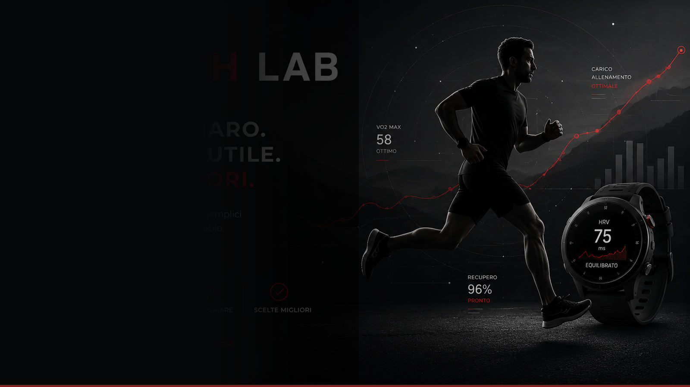

Il punto di partenza
La Pegasus resta una delle scarpe più facili da capire del catalogo Nike: non cerca di essere estrema, ma di fare bene il lavoro quotidiano. Ed è proprio questo il suo punto di forza per molti runner.
Nel mondo delle scarpe da allenamento, la vera qualità non sta sempre nel mostrare la tecnologia più vistosa. Spesso conta di più la capacità di essere consistente, prevedibile e abbastanza comoda da farti uscire di casa senza pensarci troppo.
In breve
- È una daily trainer pensata per allenamenti regolari, facili e medi.
- Punta su equilibrio, comfort e versatilità più che su prestazioni aggressive.
- Ha senso per chi vuole una scarpa affidabile da usare spesso senza troppe complicazioni.
Come si legge oggi
La Nike Pegasus 42 si inserisce nella tradizione della serie: una scarpa da corsa accessibile, trasversale e semplice da usare. Per molti runner il valore non sta nel numero di tecnologie in scheda, ma nel fatto che la scarpa funzioni bene nelle uscite di tutti i giorni.
In pratica, è il tipo di modello che dovrebbe accompagnare la maggior parte degli allenamenti, lasciando i lavori più specifici ad altre scarpe. Se cerchi una piattaforma stabile, prevedibile e non eccessivamente esigente, la famiglia Pegasus continua ad avere senso.
Da tenere d'occhio
La domanda non è se sia una scarpa spettacolare. La domanda giusta è se possa diventare quella che indossi senza pensarci, quando vuoi un'uscita semplice, regolare e senza sorprese.
Perché funziona
Nel mercato delle scarpe da running, i modelli che durano davvero sono quelli che non cercano di cambiare tutto. La Pegasus ha senso proprio perché resta leggibile: entra nella rotazione senza chiedere attenzione costante, fa il suo lavoro e si inserisce bene nella vita reale del runner.
Verdetto RunTech Lab
La Pegasus 42 resta un prodotto da equilibrio: non impressiona con effetti speciali, ma può essere proprio questo il motivo per cui funziona. Se la vuoi valutare, la domanda giusta è semplice: ti serve una scarpa affidabile per correre tanto e pensare poco?